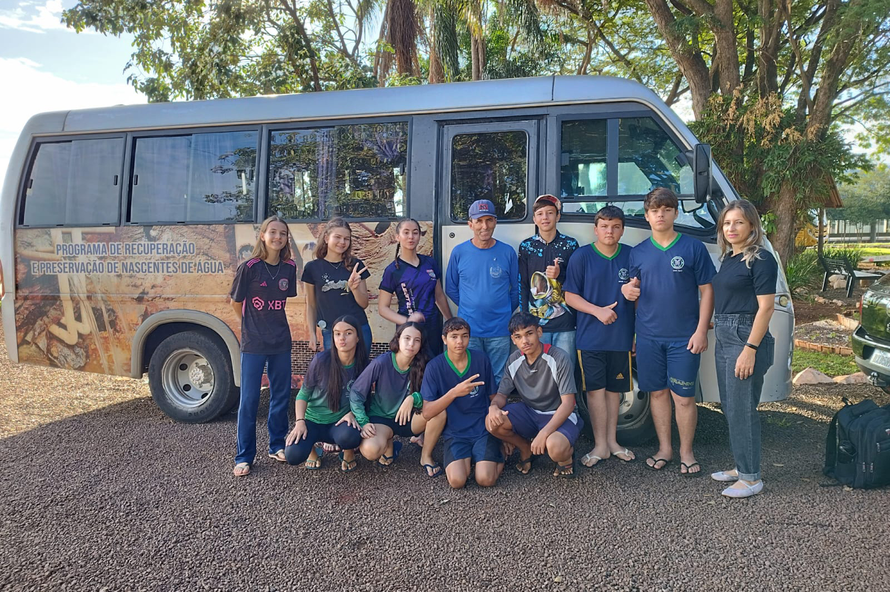
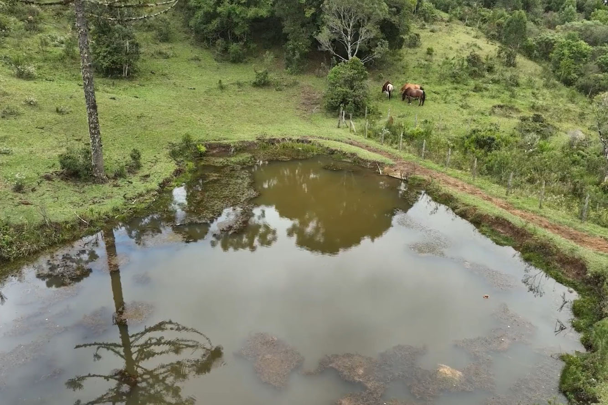
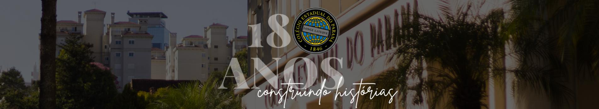
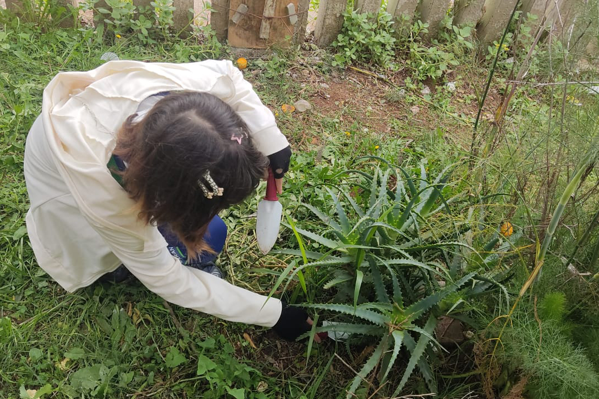
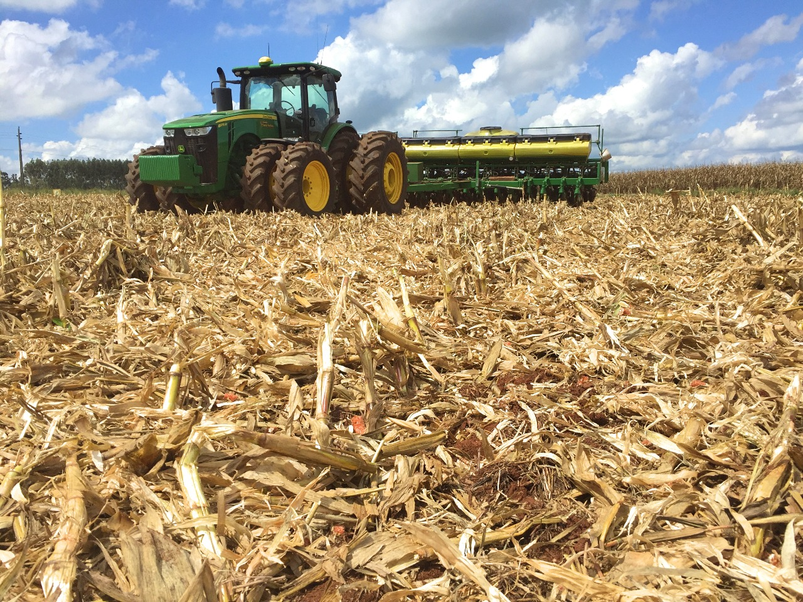
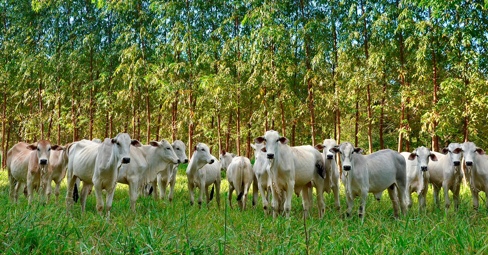
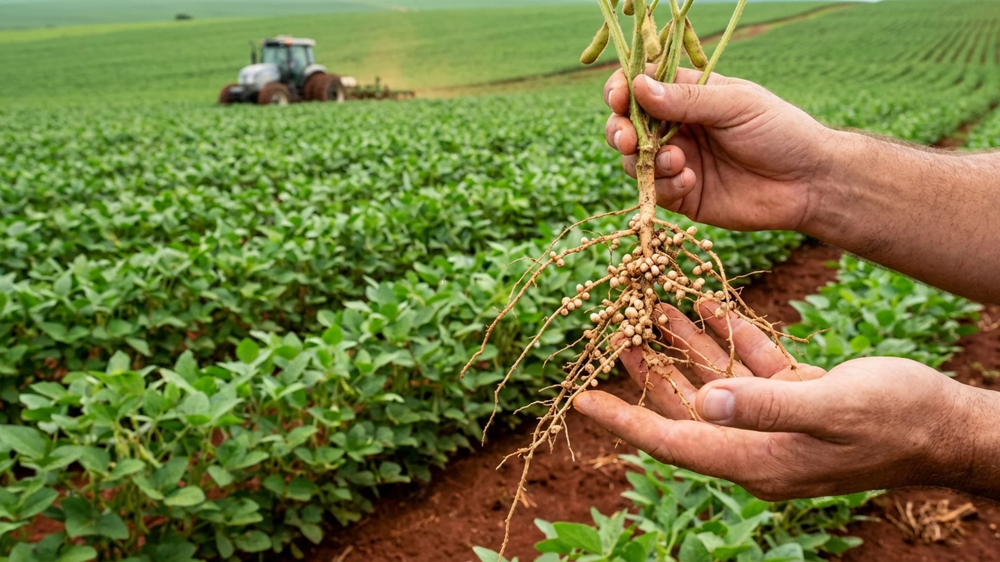
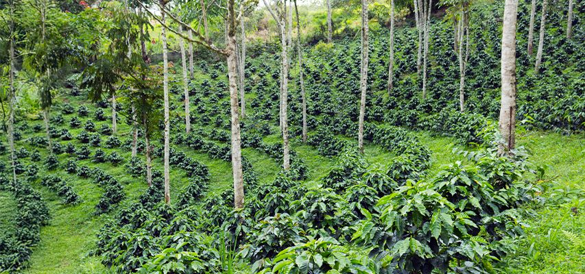
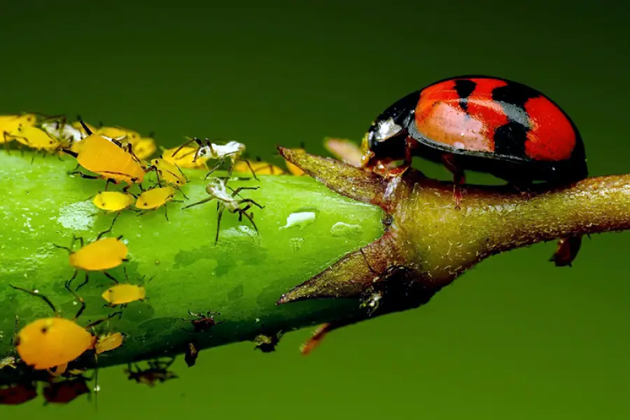
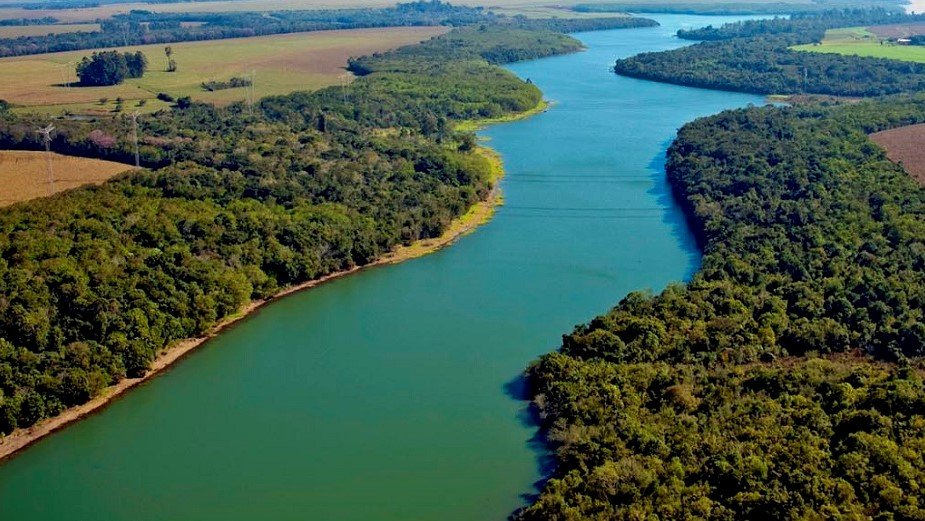

Sustentabilidade
Cuidar do meio ambiente e garantir vida para o futuro.
Antes de começar, informe seu nome.
O Agrinho 2026 promove a consciência, o conhecimento e atitudes que constroem um campo produtivo, responsável e sustentável para as futuras gerações.
Cuidar do meio ambiente e garantir vida para o futuro.
Produzir mais e melhor respeitando os recursos naturais.
A educação transforma realidades e semeia novas atitudes.
Juntos construímos um mundo melhor.
Tecnologia e inovação a serviço de um agro sustentável.
A Agrofloresta Terra Planta, localizada em Sabáudia (PR), é um exemplo de produção sustentável que integra agricultura e preservação ambiental. O sistema agroflorestal combina diferentes espécies vegetais em um mesmo espaço, promovendo biodiversidade, conservação do solo e produção de alimentos de forma equilibrada.
Conheça projetos, fazendas e instituições paranaenses que transformam sustentabilidade em ação.

Em Palotina, estudantes e produtores rurais atuam juntos na recuperação de nascentes, contribuindo para a preservação dos recursos hídricos da região.
Ver Matéria →
Projeto estadual que incentiva práticas sustentáveis no campo, promovendo a conservação do solo, da água e da vegetação nativa.
Ver Matéria →
Iniciativa do Colégio Estadual do Paraná que incentiva ações de reciclagem, uso consciente dos recursos naturais e educação ambiental.
Ver Matéria →
Estudantes desenvolveram um ecoponto para incentivar o descarte correto de recicláveis e resíduos eletrônicos, promovendo a conscientização ambiental na comunidade.
Ver Matéria →Tecnologias e ações já utilizadas em propriedades rurais para produzir mais e preservar o meio ambiente.






Conheça um projeto desenvolvido em uma edição anterior do Agrinho, reconhecido regional e estadualmente por unir tecnologia, educação e conscientização.
Desenvolvido para o Agrinho de 2024 com o tema: "Agrinho: do Campo à Cidade, Colhendo Oportunidades", pelo aluno Nicolas Zampieri, o jogo Grapes Farm foi criado com o objetivo de mostrar a importância do trabalho rural e sua conexão com a vida na cidade.
Através de uma narrativa completa, o jogador acompanha a história de um fazendeiro que começou nessa fazenda e realizou todo o processo: colheita, transporte e armazenamento, recebendo, ao final, uma grande recompensa!
O projeto conquistou o 1º lugar no Núcleo Regional de Educação de Apucarana e alcançou o 6º lugar em todo o Estado do Paraná, na Subcategoria 2 - Linguagem Scratch.
Embora desenvolvido em uma edição anterior do Agrinho, o Grapes Farm mantém uma relação com o tema atual ao destacar a importância de um Agro forte, de um Futuro sustentável e do Meio Ambiente.